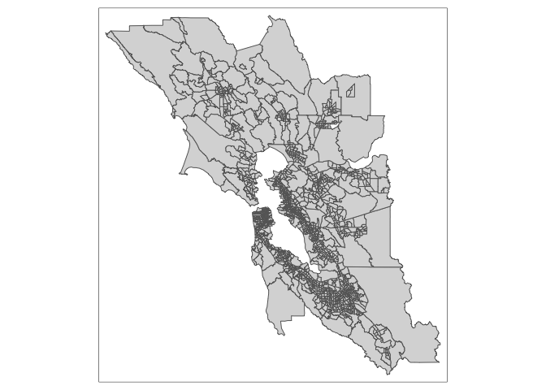
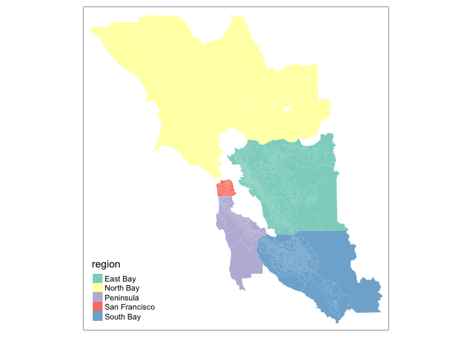
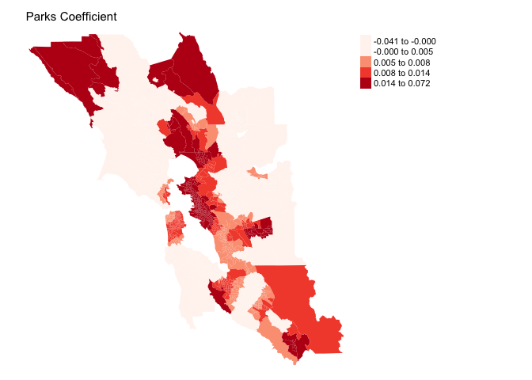
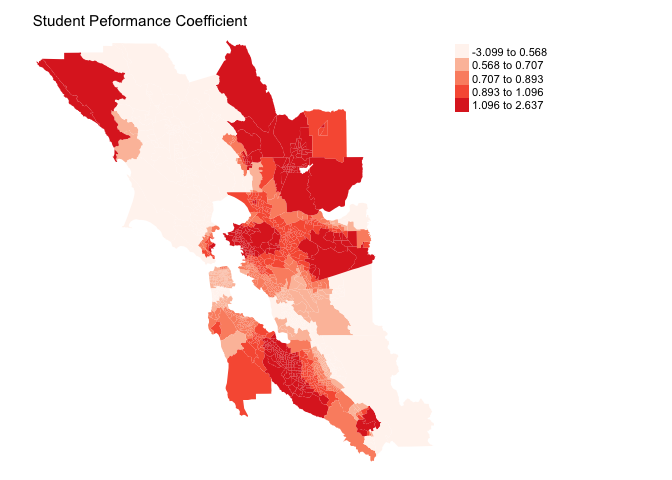
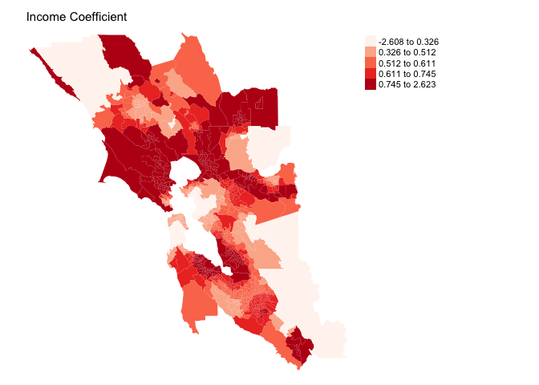
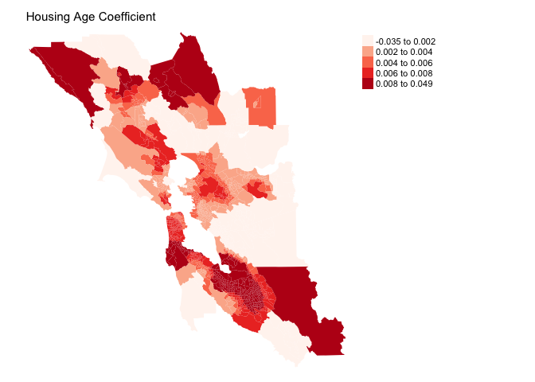

Spatial Heterogeneity
GEO 200CN - Quantitative Geography
Professor Noli Brazil
May 11, 2022
What separates Geographers from everyone else (other than their wonderful sense of humor) is that when they encounter a phenomenon or process - physical, social, economic or otherwise - their gut reaction is to ask whether this process varies from place to place. Geographers often use global models like the ones we’ve covered in the linear regression labs for convenience, but deep in their hearts they know that the relationships they estimate in these regressions likely vary across space. This is the concept of Spatial Heterogeneity, which is the topic we will cover in this lab guide.
We will be closely following this week’s handout and lecture on Spatial Heterogeneity. In this lab, we will learn how to run the following models that incorporate spatial heterogeneity
- Interaction model
- Stratified model
- Spatial regime model
- Geographically weighted regression model
To help us accomplish these learning objectives, we will examine the association between neighborhood characteristics and housing values in the San Francisco Bay Area.
Installing and loading packages
We’ll be using one new package in this lab. First, install it if you have not already done so. .
install.packages("spgwr")Second, load this package and the others we will need for executing the commands in this lab.
library(sf)
library(tidyverse)
library(tmap)
library(spgwr)
library(spdep)
library(spatialreg)Why examine spatial heterogeneity
You should
- Not expect things to be the same everywhere
- Expect to find that phenomena cluster
- Be interested in how and where processes and relationships vary spatially
In statistical terminology, you are interested in spatial non-stationarity or spatial heterogeneity in relationships. What this means is that instead of just one general relationship, the association between two variables will be different in different places.
Put differently, the motivation behind running models that incorporate spatial heterogeneity is that we’re interested in examining differences in the effects of variables on an outcome across space. For example, you might be interested in examining whether the positive relationship between percent black and COVID-19 rates that we found in a previous lab guide varies across neighborhoods in New York City. Perhaps this relationship is true only in certain types of residential neighborhoods. In another example, this study found that places with low humidity – dry air – and high temperature were particularly good indicators of fire risk. However, the conditions that affected fires varied greatly from one “ecoregion” to another in terms of terrain and vegetation.
To be clear, we’re not interested in spatial variation in individual variables. We’ve already covered this topic when we went through Spatial Autocorrelation. We’re also not interested in controlling for differences across geography and space so that we can examine the average effect of a variable on an outcome. This is basically what we’ve been doing throughout all of our regression modelling thus far. Instead, we are interested in examining how the relationship between two variables vary across space. Or, in the regression framework, we are interested in examining the spatial heterogeneity of the regression coefficients.
Our research questions in this lab guide are: What socioeconomic and built environment characteristics are associated with housing values in the Bay Area? Do these relationships vary across Bay Area region?
Bringing in the data
I zipped up a Bay Area census tract shapefile and uploaded it onto GitHub. Download it onto your local folder. The file is also located on Canvas in the Lab and Assignments Week 7 folder.
#insert the pathway to the folder you want your data stored into
setwd("insert your pathway here")
#downloads file into your working directory
download.file(url = "https://raw.githubusercontent.com/geo200cn/data/master/bayareatracts.zip", destfile = "bayareatracts.zip")
#unzips the zipped file
unzip(zipfile = "bayareatracts.zip")Read in the shapefile using the st_read() function.
bayarea <- st_read("bayareatracts.shp", stringsAsFactors = FALSE)And plot it to see what we got
tm_shape(bayarea) + tm_polygons()
The Bay Area is composed of the following nine counties: Alameda, Contra Costa, Marin, Napa, San Francisco, San Mateo, Santa Clara, Solano, and Sonoma. You can categorize these counties according to where in the Bay Area they are located: East Bay (Alameda and Contra Costa), North Bay (Marin, Napa, Solano and Sonoma), South Bay (Santa Clara), Peninsula (San Mateo) and San Francisco.
The data were downloaded from the 2013-2017 American Community Survey. A record layout of the data can be found here.
We’ll need to reproject the file into a Coordinate Reference System that uses meters as the units of distance. Let’s use UTM Zone 10. We use the st_transform() function.
bayarea <-st_transform(bayarea, crs = "+proj=utm +zone=10 +datum=NAD83 +ellps=GRS80") Basic linear regression
Let’s first run a basic multiple linear regression model, regressing lmedhval on log total population ltotp, median household income lmedinc, median age of housing medage, median number of rooms medrooms, the median number of years current residents have been residing in their houses meddur, the number of parks within a 10 minute walk parks, and the percent of 4th graders attending the nearest school who scored proficient and above on the California’s English Language Arts standardized test edppl13. Use the lm() function to run this model using Ordinary Least Squares (OLS) regression.
fit.ols <- lm(lmedhval ~ ltotp + lmedinc + medage + medrooms + meddur + parks + edppl3, data = bayarea)Here is a summary of results
#eliminate scientific notation
options(scipen=999)
summary(fit.ols)##
## Call:
## lm(formula = lmedhval ~ ltotp + lmedinc + medage + medrooms +
## meddur + parks + edppl3, data = bayarea)
##
## Residuals:
## Min 1Q Median 3Q Max
## -1.84833 -0.18460 -0.01965 0.16931 1.44107
##
## Coefficients:
## Estimate Std. Error t value Pr(>|t|)
## (Intercept) 4.1986398 0.3034919 13.834 < 0.0000000000000002 ***
## ltotp -0.0382342 0.0176646 -2.164 0.0306 *
## lmedinc 0.7675167 0.0263889 29.085 < 0.0000000000000002 ***
## medage 0.0061966 0.0005512 11.241 < 0.0000000000000002 ***
## medrooms -0.0856691 0.0095095 -9.009 < 0.0000000000000002 ***
## meddur 0.0117370 0.0023333 5.030 0.000000546 ***
## parks 0.0102368 0.0012140 8.432 < 0.0000000000000002 ***
## edppl3 0.8972933 0.0647460 13.859 < 0.0000000000000002 ***
## ---
## Signif. codes: 0 '***' 0.001 '**' 0.01 '*' 0.05 '.' 0.1 ' ' 1
##
## Residual standard error: 0.3129 on 1568 degrees of freedom
## Multiple R-squared: 0.6422, Adjusted R-squared: 0.6406
## F-statistic: 402 on 7 and 1568 DF, p-value: < 0.00000000000000022The linear model is a global model in the sense that it estimates an average effect and assumes that this effect applies to all places. We now turn to the four methods covered by handout that deal with spatial heterogeneity in the regression coefficients.
Interaction model
The first model is the interaction regression model. Here, we interact the variable region with one or more of the independent variables. To get the interaction between medage and region, we multiply them in lm() using the operator *
fit.int <- lm(lmedhval ~ ltotp + lmedinc + medage*region + medrooms + meddur + parks + edppl3, data = bayarea)Summarize the results
summary(fit.int)##
## Call:
## lm(formula = lmedhval ~ ltotp + lmedinc + medage * region + medrooms +
## meddur + parks + edppl3, data = bayarea)
##
## Residuals:
## Min 1Q Median 3Q Max
## -1.83400 -0.16412 -0.00931 0.15247 1.27117
##
## Coefficients:
## Estimate Std. Error t value Pr(>|t|)
## (Intercept) 6.1506997 0.3125779 19.677 < 0.0000000000000002
## ltotp -0.0614002 0.0165147 -3.718 0.000208
## lmedinc 0.5957876 0.0267336 22.286 < 0.0000000000000002
## medage 0.0040160 0.0007772 5.167 0.000000269
## regionNorth Bay -0.0676059 0.0688656 -0.982 0.326396
## regionPeninsula -0.2307712 0.1273507 -1.812 0.070164
## regionSan Francisco 0.5371517 0.1104769 4.862 0.000001278
## regionSouth Bay -0.0315589 0.0690407 -0.457 0.647659
## medrooms -0.0379107 0.0095196 -3.982 0.000071368
## meddur 0.0064221 0.0022256 2.885 0.003962
## parks 0.0058858 0.0013373 4.401 0.000011492
## edppl3 1.0073740 0.0604405 16.667 < 0.0000000000000002
## medage:regionNorth Bay 0.0007567 0.0014485 0.522 0.601484
## medage:regionPeninsula 0.0095904 0.0023297 4.117 0.000040476
## medage:regionSan Francisco -0.0027678 0.0015792 -1.753 0.079847
## medage:regionSouth Bay 0.0056334 0.0014471 3.893 0.000103
##
## (Intercept) ***
## ltotp ***
## lmedinc ***
## medage ***
## regionNorth Bay
## regionPeninsula .
## regionSan Francisco ***
## regionSouth Bay
## medrooms ***
## meddur **
## parks ***
## edppl3 ***
## medage:regionNorth Bay
## medage:regionPeninsula ***
## medage:regionSan Francisco .
## medage:regionSouth Bay ***
## ---
## Signif. codes: 0 '***' 0.001 '**' 0.01 '*' 0.05 '.' 0.1 ' ' 1
##
## Residual standard error: 0.2878 on 1560 degrees of freedom
## Multiple R-squared: 0.6988, Adjusted R-squared: 0.6959
## F-statistic: 241.3 on 15 and 1560 DF, p-value: < 0.00000000000000022You will notice that the reference region East Bay is excluded in the interaction because it is the reference group.
The interaction results in the R output are shown in the form of variable:region. For example, medage:regionNorth Bay is the interaction between medage and the North Bay.
Question 1: What is the interpretation of the coefficient for the variable medage:regionSouth Bay?
Stratified model
The next method partitions or stratifies data by region and fits regression models separately for each region. We have 5 Bay Area regions. We can make a color patch map to see them.
tm_shape(bayarea) + tm_polygons("region", style ="cat", border.alpha = 0)
In a stratified modelling approach, we run 5 separate regressions with the same variables. We can subset the file bayarea to each region and run lm() five times. The lm() function has the argument subset which allows us to subset the data (like filter() in tidy). First, the South Bay
fit.olsSB <- lm(lmedhval ~ ltotp + lmedinc + medage + medrooms + meddur + parks + edppl3, data = bayarea, subset = region =="South Bay")
summary(fit.olsSB)##
## Call:
## lm(formula = lmedhval ~ ltotp + lmedinc + medage + medrooms +
## meddur + parks + edppl3, data = bayarea, subset = region ==
## "South Bay")
##
## Residuals:
## Min 1Q Median 3Q Max
## -1.84101 -0.15034 0.00893 0.16786 0.88445
##
## Coefficients:
## Estimate Std. Error t value Pr(>|t|)
## (Intercept) 6.080576 0.668705 9.093 < 0.0000000000000002 ***
## ltotp -0.070409 0.039637 -1.776 0.07651 .
## lmedinc 0.591643 0.060995 9.700 < 0.0000000000000002 ***
## medage 0.008557 0.001494 5.729 0.0000000212 ***
## medrooms -0.055558 0.018619 -2.984 0.00304 **
## meddur 0.011573 0.005930 1.952 0.05175 .
## parks 0.003732 0.002973 1.255 0.21011
## edppl3 1.344884 0.150797 8.918 < 0.0000000000000002 ***
## ---
## Signif. codes: 0 '***' 0.001 '**' 0.01 '*' 0.05 '.' 0.1 ' ' 1
##
## Residual standard error: 0.295 on 364 degrees of freedom
## Multiple R-squared: 0.6519, Adjusted R-squared: 0.6452
## F-statistic: 97.37 on 7 and 364 DF, p-value: < 0.00000000000000022Question 2: What is the interpretation the coefficient for the variable medage?
We run the model for the other four regions. You can run the summary() function to see the differences.
Question 3: Run stratified models for the other four regions. Which region has the strongest association between medage and housing values?
Spatial regime model
Spatial regime models allow the regression coefficients to vary between discrete spatial subsets of the data. A spatial regime model fits to the entire data set, which the interaction model does but not the stratified model, and at the same time can estimate different sets of coefficients for subsets of the data, which the stratified model does but not the interaction model. The goal is to determine whether the regression coefficients vary across geographic space, in our case across region.
We can fit a spatial regime model by using lm() but wrapping region/ around the independent variables. Also note the inclusion of 0 in the equation. This will allow for the intercept to also vary by region.
fit.regime <- lm(lmedhval ~ 0 + region/(ltotp + lmedinc + medage + medrooms + meddur + parks + edppl3), data = bayarea)summary(fit.regime)In the R output, any coefficient with regionEast Bay is for tracts in the East Bay. The first coefficient regionEast Bay is the intercept. The coefficient regionEast Bay:ltotp is the association between ltotp and housing values in the East Bay. The coefficient regionEast Bay:lmedinc is the association between lmedinc and housing values in the East Bay.
Question 4: Explain the differences and similarities in the interpretation of the coefficient on regionSouth Bay:medage in the spatial regime model, the coefficient medage:regionSouth Bay in the interacted model, and the coefficient medage in the stratified regression model for the South Bay.
Is the spatial regime a better model than the non-interacted OLS? We can run the spatial chow test described in the handout to determine whether there is evidence that the relationships between the independent variables and housing values differ across region. There is no canned R command that allows us to run a chow test. Luckily, Anselin (2007) wrote a function for us
#create a function that runs the spatial chow test (Anselin, 2007)
chow.test <- function(rest,unrest) {
#extracts residuals from the regime and regular regression models
er <- residuals(rest)
eu <- residuals(unrest)
#sum of squared errors
er2 <- sum(er^2)
eu2 <- sum(eu^2)
#calculates degrees of freedom
k <- rest$rank
n2k <- rest$df.residual - k
#calculates chow statistic
c <- ((er2 - eu2)/k) / (eu2 / n2k)
#pvalue from F distribution
pc <- pf(c,k,n2k,lower.tail=FALSE)
#returns chow stat, pvalue, rank (number of estimated parameters) and degrees of freedom
list(c,pc,k,n2k)
}This spatial chow test examines whether fit as defined by the sum of squared errors improves significantly using the unrestrained (spatial regime) model. The null is the basic OLS and the alternative is the spatial regime. Use this function in R to compare the standard OLS model and the spatial regime model.
chow.test( fit.ols, fit.regime)## [[1]]
## [1] 78.49631
##
## [[2]]
## [1] 0.0000000000000000000000000000000000000000000000000000000000000000000000000000000000000000000000000000000000004832431
##
## [[3]]
## [1] 8
##
## [[4]]
## [1] 1560The 2nd value in the list gives the p-value. Using a cutoff of 0.05, we can reject the null of the restrained model (non spatial regime OLS).
An advantage of the spatial regime method over the other two above approaches is that you can incorporate a spatial lag or error in the model.
Question 5: Run a spatial regime spatial error model using Queen contiguity and row-standardized weights. Is there evidence of a spatial dependency?
Question 6: What is the interpretation of the coefficient for the variable regionSouth Bay:medage in the spatial regime spatial error model?
Geographically weighted regression
All the spatial heterogeneity models we’ve run so far treat geography as something that is split up into regions with hard boundaries, like region or county. In contrast, geographically weighted regression (GWR) attempts to treat your study area like a continuous surface.
GWR runs a local regression for each observation in your study area. GWR uses the coordinates of each tract centroid as the target point. GWR runs a regression using the target tract and its neighbors. The neighbors are weighted based on how close they are to the target tract. There are two major decisions to make when running a GWR: (1) the kernel density function assigning weights \(w_{ij}\) for neighbor \(j\) and target point \(i\); and (2) the bandwidth \(h\) of the function, which determines the subset of observations to include in the local regression.
Kernel density function and bandwidth h
The kernel density function determines the weight assigned to neighboring units. Usually, the weight depends on the distance of the point \(j\) from the target point \(i\). That is, we want to weight tracts that are closer to the target tract more heavily in the regression than tracts that are farther out. A common density function is a Gaussian weighting function
\[ w_{ij} = exp(-\frac{d_{ij}^2}{h^2}) \]
where \(d_{ij}\) is the distance between location \(i\) and \(j\) and \(h\) is the bandwidth. This is the default kernel function in R.
Another common density function is the bi-square function, which is described in the handout.
\[w_{ij} = (1-(\frac{d_{ij}^2}{h^2}))^2\]
Choosing a weighting function also involves choosing a bandwidth h. The bandwidth is the distance band or number of neighbors used for each local regression equation and is a very important parameter, as it controls the degree of smoothing in the model.
There are several ways to choose an h. First, you might already have a bandwidth in mind. This can be the case, for example, if prior studies have already established an appropriate bandwidth. Second, you can derive an optimal bandwidth using a data-driven approach. R offers two methods to select h. The first uses a cross-validation (CV) method to choose the optimal kernel bandwidth. The method finds the optimal bandwidth h that minimizes the sum of squared errors at all locations \(i\). The other method chooses a bandwidth that minimizes the Akaike Information Criterion (AIC).
In order to calculate an optimal bandwidth in R, use the command gwr.sel(), which is a part of the spgwr package. This function has a similar format to all the lm() type of functions we’ve used in this class so far. The function only likes sp objects. So we need to convert bayarea to an sp object using the as() function
bayarea.sp <- as(bayarea, "Spatial")Now we can run gwr.sel(). The default method is cross-validation
gwr.b1<-gwr.sel(lmedhval ~ ltotp + lmedinc + medrooms + medage + meddur + parks + edppl3, bayarea.sp)Let’s see what the the estimated optimal bandwidth is.
gwr.b1## [1] 7040.378This is the distance (in meters, because our data are projected in a system measured in meters), which the weighting function will search, and include all tracts whose centroids are within this radius.
Plug the cross validation based bandwidth into the function gwr(), which runs the GWR model, using the argument bandwidth.
#this might take some time to run as GWR is running weighted regressions on all 1,576 tracts
gwr.fit1<-gwr(lmedhval ~ ltotp + lmedinc + medrooms + medage + meddur + parks + edppl3, data = bayarea.sp, bandwidth = gwr.b1, se.fit=T, hatmatrix=T)Don’t use summary() to get the results. Instead, just type the model object name and you will get back the relevant summary information of the model.
gwr.fit1## Call:
## gwr(formula = lmedhval ~ ltotp + lmedinc + medrooms + medage +
## meddur + parks + edppl3, data = bayarea.sp, bandwidth = gwr.b1,
## hatmatrix = T, se.fit = T)
## Kernel function: gwr.Gauss
## Fixed bandwidth: 7040.378
## Summary of GWR coefficient estimates at data points:
## Min. 1st Qu. Median 3rd Qu. Max.
## X.Intercept. -14.8367737 4.7192789 6.4927353 9.0014006 37.9782726
## ltotp -1.3257556 -0.0812652 -0.0249426 0.0083518 0.3033374
## lmedinc -2.6077789 0.3291706 0.5705322 0.7039981 2.6226948
## medrooms -0.8227822 -0.0525912 -0.0224669 0.0188203 1.7695621
## medage -0.0351063 0.0027374 0.0051062 0.0069553 0.0493152
## meddur -0.0664802 0.0012466 0.0056096 0.0124948 0.2522683
## parks -0.0414050 0.0022049 0.0067550 0.0108894 0.0717151
## edppl3 -3.0989630 0.6059132 0.7902467 1.0476815 2.6368919
## Global
## X.Intercept. 4.1986
## ltotp -0.0382
## lmedinc 0.7675
## medrooms -0.0857
## medage 0.0062
## meddur 0.0117
## parks 0.0102
## edppl3 0.8973
## Number of data points: 1576
## Effective number of parameters (residual: 2traceS - traceS'S): 284.4856
## Effective degrees of freedom (residual: 2traceS - traceS'S): 1291.514
## Sigma (residual: 2traceS - traceS'S): 0.2262557
## Effective number of parameters (model: traceS): 219.4385
## Effective degrees of freedom (model: traceS): 1356.561
## Sigma (model: traceS): 0.2207646
## Sigma (ML): 0.2048194
## AICc (GWR p. 61, eq 2.33; p. 96, eq. 4.21): -12.45143
## AIC (GWR p. 96, eq. 4.22): -305.9629
## Residual sum of squares: 66.11474
## Quasi-global R2: 0.8458944Remember that the GWR estimates regressions for all 1,576 tracts, which means we have 1,576 intercepts and coefficients for ltotp, lmedinc and all independent variables. The R output above shows that the minimum coefficient value for the variable ltotp is -1.32 and the maximum value is 0.30. The values under Global are the coefficients using a regular multiple linear regression (should match the values from fit.ols). At the bottom of the output are various fit statistics (AIC, \(R^2\)). You can compare the AIC with the OLS AIC to see which has a better fit.
The GWR models we ran above yielded a fixed distance to search for neighbors to include in the local regression. But there are places in our data where tracts are more densely occurring (such as in San Francisco). This means that in some areas, specifically in downtown areas, you’ll include a larger number of neighboring tracts in the local regression compared to other areas, such as large tracts in more rural areas. In this case, an adaptive kernel is suitable.
In order to use an adaptive kernel, specify adapt = TRUE when finding the optimal bandwidth using gwr.sel(). Then plug the bandwidth into the function gwr() using the argument adapt =
Presenting GWR results
In addition to a summary table showing the distribution of GWR coefficient values, you should also map the coefficients to know where high and low coefficients are located. We need to extract the coefficients from the object gwr.fit1, which is a gwr object. The object contains a number of other objects. For example, typing in gwr.fit1$results gives you overall model results such as the AIC. Typing in gwr.fit1$bandwidth gives you the bandwidth values for each of the 1,576 tracts in the data set.
An important object within the gwr object is called SDF and this is the spatial polygons data frame containing the regression model estimates. Get the names of the objects within SDF
names(gwr.fit1$SDF)## [1] "sum.w" "X.Intercept." "ltotp"
## [4] "lmedinc" "medrooms" "medage"
## [7] "meddur" "parks" "edppl3"
## [10] "X.Intercept._se" "ltotp_se" "lmedinc_se"
## [13] "medrooms_se" "medage_se" "meddur_se"
## [16] "parks_se" "edppl3_se" "gwr.e"
## [19] "pred" "pred.se" "localR2"
## [22] "X.Intercept._se_EDF" "ltotp_se_EDF" "lmedinc_se_EDF"
## [25] "medrooms_se_EDF" "medage_se_EDF" "meddur_se_EDF"
## [28] "parks_se_EDF" "edppl3_se_EDF" "pred.se.1"The variables X.Intercept. to edppl3 give the regression coefficients. X.Intercept.se to edppl3_se give the coefficient standard errors. Let’s extract the parks, edppl3, lmedinc and medage coefficients and save them as variables in bayarea using mutate()
bayarea <- mutate(bayarea, parks.b = gwr.fit1$SDF$parks, edppl3.b = gwr.fit1$SDF$edppl3, medincome.b = gwr.fit1$SDF$lmedinc, medage.b = gwr.fit1$SDF$medage)You can then map the effects of parks
tm_shape(bayarea, unit = "mi") +
tm_polygons(col = "parks.b",palette = "Reds", style = "quantile",
border.alpha = 0, title = "") +
tm_layout(main.title = "Parks Coefficient", main.title.size = 0.95, frame = FALSE, legend.outside = TRUE)
What about the impact of student performance?
tm_shape(bayarea, unit = "mi") +
tm_polygons(col = "edppl3.b",palette = "Reds", style = "quantile",
border.alpha = 0, title = "") +
tm_layout(main.title = "Student Peformance Coefficient", main.title.size = 0.95, frame = FALSE, legend.outside = TRUE)
And log median income
tm_shape(bayarea, unit = "mi") +
tm_polygons(col = "medincome.b",palette = "Reds", style = "quantile",
border.alpha = 0, title = "") +
tm_layout(main.title = "Income Coefficient", main.title.size = 0.95, frame = FALSE, legend.outside = TRUE)
Finally, the median age of the housing unit
tm_shape(bayarea, unit = "mi") +
tm_polygons(col = "medage.b",palette = "Reds", style = "quantile",
border.alpha = 0, title = "") +
tm_layout(main.title = "Housing Age Coefficient", main.title.size = 0.95, frame = FALSE, legend.outside = TRUE)
In addition to mapping coefficient sizes, you should also map whether these coefficients are statistically significant. Unfortunately, R doesn’t have that information neatly compiled for you. But, you can use the coefficient size and standard error to get a t-statistic, which you can then map onto a t distribution to find the pvalue. The null hypothesis is the coefficient is 0 and the alternative is that it is not 0.
Under the null hypothesis, the \(t\) statistic follows a \(t\) distribution, and hence one can calculate the appropriate p-value. To do this in R, first get the degrees of freedom from the gwr results object. You will need this to get the p-value from the t distribution.
dfree<-gwr.fit1$results$edfNext, calculate the t statistic, which is the estimated coefficient minus 0 divided by the estimated standard error (the equation was covered in Handout 3). Save this in your spatial data frame. Let’s do this for the variable parks
bayarea <- mutate(bayarea, parks.t = gwr.fit1$SDF$parks/gwr.fit1$SDF$parks_se)Next, calculate the pvalue using the pt() command. The command looks up the p-value associated with your t statistic from a t distribution table. You’ll have to multiply the value by 2 to get a two-tail t test
bayarea <- mutate(bayarea, parks.t.p = 2*pt(-abs(bayarea$parks.t), dfree))You can map the pvalue according to different levels of statistical significance (0.10, 0.05 and 0.01).
Question 7: Create a p-value map for the medage variable.
Question 8: Using the medage coefficient and p-value maps, summarize the spatial heterogeneity in the relationship between housing values and the median age of housing in the Bay Area.

This work is licensed under a Creative Commons Attribution-NonCommercial 4.0 International License.
Website created and maintained by Noli Brazil